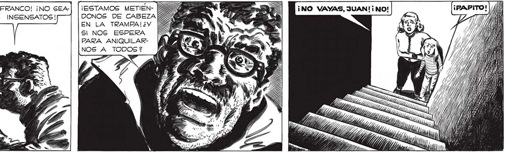
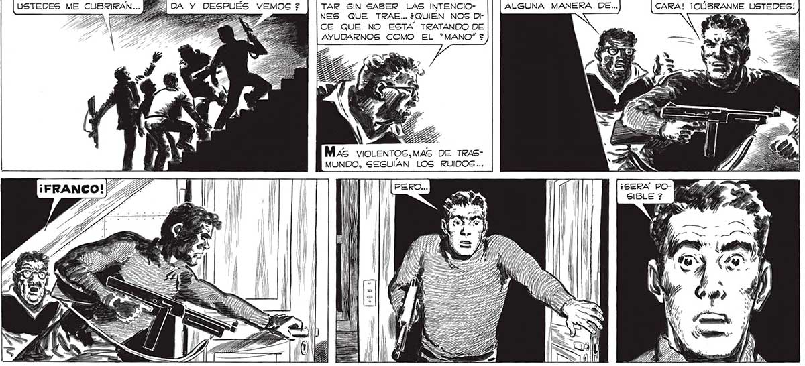

316 ¡NO, FRANCO! ¡NO SEA: MOS INSENSATOS! ¡DÉJEME! ¡ESTAMOS METIEN- - e a ¡NO VAYAS, JUAN!¡ NO! DONOS DE CABEZA : 4% EN LA TRAMPA!¿Y SI NOS ESPERA PARA ANIQUILARNOS A TODOS? 2Y Sl TIRAMOS UNA GRANA: | [NO..NO PODEMOS EMPEZAR A MA-|| [TENEMOS QUE PENSAR ¡NO DOY MAS POR VERLE LA DA Y DESPUES VEMOS 7 TAR SIN SABER LAS INTENCIO- ALGUNA MANERA DE... CARA! ¡CÚBRANME USTEDES! : e NES QUE TRAE... ¿QUIEN NOS Dt ; > “E - CE QUE NO ESTA TRATANDO DE : AYUDARNOS COMO EL “MANO” 7 ¡DÉJENME ENTRAR A MI: MS: USTEDES ME CUBRIRAN... TIT Zn a ; FA TT Ze 2 Mas vioLeNTOS,MAS DE TRASMUNDO, SEGUÍAN LOS RUIDOS...

